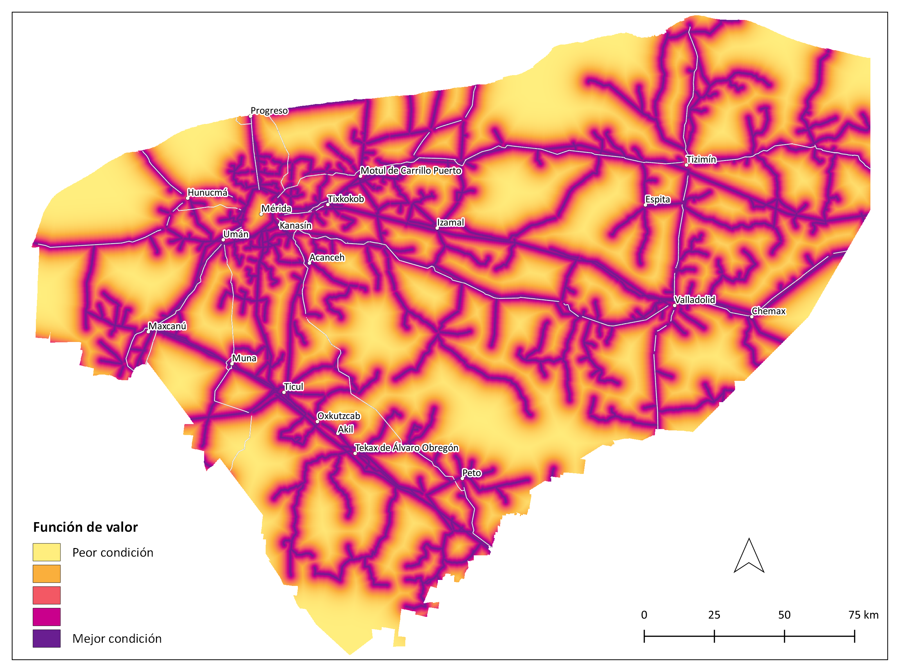

Pesca-Final¶
Meta¶
- Fortalecer el sector pesquero para que desarrolle actividades pesqueras viables y sostenibles.
- Fortalecer la infraestructura de procesamiento actual en la zona costera y áreas circundantes, así como buscar espacios para el desarrollo de centros de acopio y plantas de procesamiento de subproductos de la pesca, que cumplan con la normatividad nacional e internacional.
- Asegurar espacios de refugio para embarcaciones pesqueras y definir espacios diferenciados para las embarcaciones de desarrollo turístico y pesca comercial.
1.1 Modelo de decisión¶
Debido a que la actividad pesquera en el estado es marina, el análisis se aplicó en la zona que abarca 100 km a partir de la línea de costa.
1.2 Criterios¶
1.2.1 Infraestructura¶
| Criterio | Definición |
|---|---|
| Agua potable | Acceso a agua potable para la producción de hielo como distancia de 5 km a localidades urbanas y pesqueras evaluadas con base en el porcentaje de viviendas que disponen de agua entubada. |
| Electricidad | Distancia a red de transmisión eléctrica. |
| Vías de comunicación | Distancia a caminos y carreteras para el transporte de insumos y productos. |
| Comunicaciones | Acceso a comunicación a través de internet y telefonía. |
1.2.1.1 Agua potable¶
Acceso a agua potable para la producción de hielo como distancia de 5 km a localidades urbanas y pesqueras evaluadas con base en el porcentaje de viviendas que disponen de agua entubada.
Insumos
| Capa | Viviendas que disponen de agua entubada por localidad |
|---|---|
| Fuente | [1] Polígonos de localidades urbanas y pesqueras. Marco Geoestadístico. Censo de Población y Vivienda INEGI y [2] Datos de indicador. Censo de Población y Vivienda. Principales resultados por localidad (ITER) INEGI |
| Año | 2020 |
| Campo | [2] VIVTOT y VPH_AEASP |
| Unidades | Porcentaje |
Parámetros de la función de valor
Función de valor de agua potable
1.2.1.2 Electricidad¶
Distancia a red de transmisión eléctrica.
Insumos
| Capa | Distancia líneas de transmisión de energía eléctrica |
|---|---|
| Fuente | Líneas de transmisión INEGI |
| Año | 2012 |
| Escala | 1:50,000 |
| Unidades | Kilómetros |
Parámetros de la función de valor
Función de valor de electricidad

1.2.1.3 Vías de comunicación¶
Distancia a caminos y carreteras para el transporte de insumos y productos.
Insumos
| Capa | Distancia a la red vial |
|---|---|
| Fuente | Red Nacional de Caminos (RNC) Red vial - INEGI |
| Año | 2019 |
| Escala | Sin dato |
| Unidades | Kilómetros |
Parámetros de la función de valor
Función de valor de vías de comunicación
1.2.1.4 Comunicaciones¶
Acceso a comunicación a través de internet y telefonía.
| Criterio | Definición |
|---|---|
| Internet | Distancia de 5 km a localidades urbanas y pesqueras evaluadas con base en el porcentaje de viviendas con internet. |
| Telefonía | Distancia de 5 km a localidades urbanas y pesqueras evaluadas con base en el porcentaje de viviendas con celular. |
1.2.1.4.1 Internet¶
Distancia de 5 km a localidades urbanas y pesqueras evaluadas con base en el porcentaje de viviendas con internet.
Insumos
| Capa | Viviendas con internet por localidad |
|---|---|
| Fuente | [1] Polígonos de localidades urbanas y pesqueras. Marco Geoestadístico. Censo de Población y Vivienda INEGI y [2] Datos de indicador. Censo de Población y Vivienda. Principales resultados por localidad (ITER) INEGI |
| Año | 2020 |
| Campo | [2] VIVTOT y VPH_INTER |
| Unidades | Porcentaje |
Parámetros de la función de valor
Función de valor de internet
1.2.1.4.2 Telefonía¶
Distancia de 5 km a localidades urbanas y pesqueras evaluadas con base en el porcentaje de viviendas con celular.
Insumos
| Capa | Viviendas que disponen de teléfono celular por localidad |
|---|---|
| Fuente | [1] Polígonos de localidades urbanas y pesqueras. Marco Geoestadístico. Censo de Población y Vivienda INEGI y [2] Datos de indicador. Censo de Población y Vivienda. Principales resultados por localidad (ITER) INEGI |
| Año | 2020 |
| Campo | [2] VIVTOT y VPH_CEL |
| Unidades | Porcentaje |
Parámetros de la función de valor
Función de valor de telefonía

1.2.2 Socioeconómicos¶
| Criterio | Definición |
|---|---|
| Localidades pesqueras | Distancia a localidades con comunidades pesqueras: Celestún, Sisal, Chuburná, Yucalpetén, Progreso, Telchac, Chabihau, Dzilam de Bravo, San Felipe, Río Lagartos, Las Coloradas, El Cuyo, Chelem, Chicxulub, Santa Clara y San Crisanto. |
| Centros de distribución | Distancia a localidades consideradas como puntos de distribución de productos pesqueros: Progreso, Mérida, Valladolid, Tizimín, Hunucmá, Motul y Dzilam González. |
1.2.2.1 Localidades pesqueras¶
Distancia a localidades con comunidades pesqueras: Celestún, Sisal, Chuburná, Yucalpetén, Progreso, Telchac, Chabihau, Dzilam de Bravo, San Felipe, Río Lagartos, Las Coloradas, El Cuyo, Chelem, Chicxulub, Santa Clara y San Crisanto.
Insumos
| Capa | Distancia a localidades pesqueras |
|---|---|
| Fuente | Polígonos de localidades. Marco Geoestadístico. Censo de Población y Vivienda INEGI |
| Año | 2020 |
| Escala | Sin dato |
| Unidades | Kilómetros |
Parámetros de la función de valor
Función de valor de localidades pesqueras
1.2.2.2 Centros de distribución¶
Distancia a localidades consideradas como puntos de distribución de productos pesqueros: Progreso, Mérida, Valladolid, Tizimín, Hunucmá, Motul y Dzilam González.
Insumos
| Capa | Distancia a localidades con centros de distribución de productos pesqueros |
|---|---|
| Fuente | Polígonos de localidades. Marco Geoestadístico. Censo de Población y Vivienda INEGI |
| Año | 2020 |
| Escala | Sin dato |
| Unidades | Kilómetros |
Parámetros de la función de valor
Función de valor de centros de distribución
1.3 Mapa de aptitud¶
1.3.1 Zonas de exclusión¶
Se considera como exclusión la distancia mayor a 100 km a partir de la línea de costa.
Insumos
| Capa | Distancia a la línea de costa |
|---|---|
| Fuente | Adaptado de: División política municipal INEGI |
| Año | 2018 |
| Escala | 1:250,000 |
| Unidades | Kilómetros |
1.3.2 Mapa de aptitud de pesca¶
Pesos globales de los atributos ambientales de pesca
| Criterio | Peso |
|---|---|
| Agua potable | 0.344 |
| Electricidad | 0.241 |
| Vías de comunicación | 0.155 |
| Centros de distribución | 0.096 |
| Internet | 0.088 |
| Telefonía | 0.046 |
| Localidades pesqueras | 0.024 |
Área por categoría de aptitud
| Categoría | km² | Porcentaje del estado |
|---|---|---|
| Muy alta | 9874.9 | 25 |
| Alta | 9941.1 | 25 |
| Moderada | 8238.3 | 21 |
| Baja | 729.6 | 2 |
| Muy baja | 14.7 | 0 |
| Nula | 10738.1 | 27 |